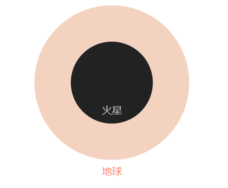

火星是太阳系中第二小的行星。它的表面积约为地球表面积的28%，还不如地球的陆地面积大。此外，它的质量也不大，大概只有地球质量的10.7%。
火星是来自太阳的第四颗行星——一个尘土飞扬、寒冷、沙漠世界，大气层非常稀薄。火星也是一个充满活力的行星，有季节、极地冰帽、峡谷、灭绝的火山，而且有证据表明它在过去更加活跃。
火星的半径为2，106英里（3，390公里），大约是地球的一半大小。如果地球是镍的大小，火星将和覆盆子一样大。火星比地球小1.9倍。

火星的平均距离为1.42亿英里（2.28亿公里），距离太阳有1.5个天文单位。一个天文单位（简称AU）是距离太阳到地球的距离。从这个距离，从太阳到火星需要13分钟的阳光。
当火星绕太阳运行时，它每24.6小时完成一次旋转，这与地球上的一天（23.9小时）非常相似。火星日被称为索尔斯——"太阳日"的缩日。火星上一年持续669.6个索尔，相当于687个地球日。
火星的自转轴在绕太阳轨道平面上倾斜25度。这是与地球的另一个相似之处，地球的轴向倾斜度为23.4度。
和地球一样，火星有不同的季节，但是它们比地球上的季节更持久，因为火星绕太阳运行的时间更长（因为它离地球更远）。虽然在地球上，季节在一年中均匀分布，持续3个月（或四分之一年），但在火星上，由于火星围绕太阳的椭圆卵形轨道，季节长度不同。
北半球的春天（南部的秋天）是最长的季节，为194索尔。北半球的秋天（南方的春天）最短，为142天。北方冬季/南方夏季为154索尔，北部夏季/南部冬季为178索尔。
火星的中心有一个密集的核心，半径在930到1300英里（1500到2100公里）之间。它由铁、镍和硫磺制成。核心周围是一块770至1，170英里（1，240至1，880公里）厚的岩石地衣，上面是铁、镁、铝、钙和钾制成的地壳。这个地壳在6到30英里（10到50公里）深之间。
红色星球其实有很多颜色。在表面，我们看到颜色，如棕色，金色和褐色。火星看起来红的原因是岩石中的铁氧化（或生锈），岩石中的重晶石（火星"土壤"）和火星的尘埃。这些尘埃被踢入大气层，从远处看，这颗行星看起来大部分是红色的。
火星的大气层很薄，主要由二氧化碳、氮气和氩气组成。
在我们眼里，天空会因为悬浮的尘埃而朦胧而红，而不是我们在地球上看到的熟悉的蓝色色调。火星稀疏的大气层并不能提供多少保护，免受陨石、小行星和彗星等物体的冲击。
火星今天没有全球磁场，但南半球火星地壳区域高度磁化，表明40亿年前有磁场的痕迹。
火星没有星环。然而，在5000万年后，当Phobos撞击火星或破裂时，它可能会在红色星球周围形成一个尘土飞扬的环。
科学家们并不指望在火星上发现目前蓬勃发展的生物。相反，他们正在寻找很久以前存在的生命迹象，那时火星更温暖，被水覆盖着。